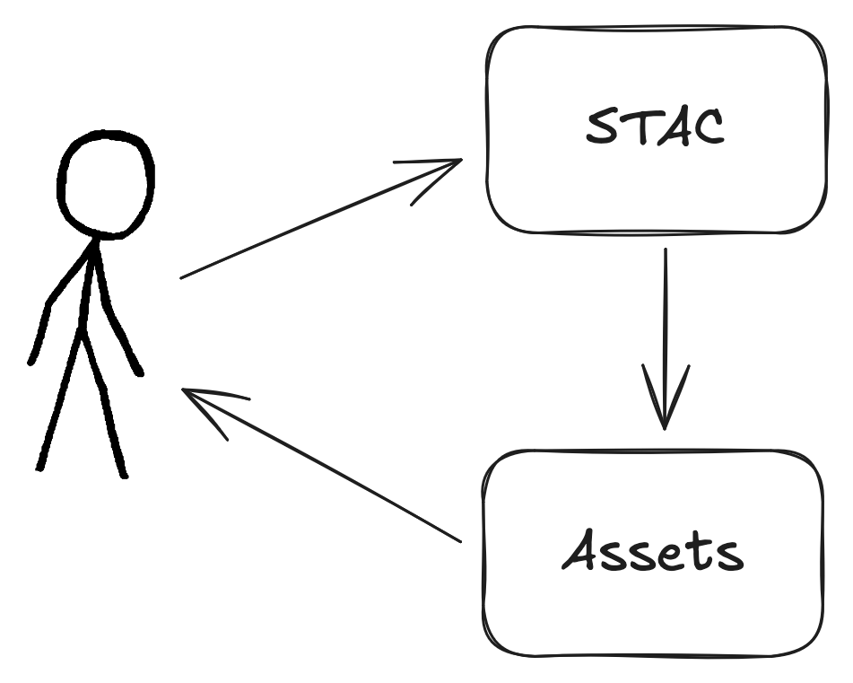
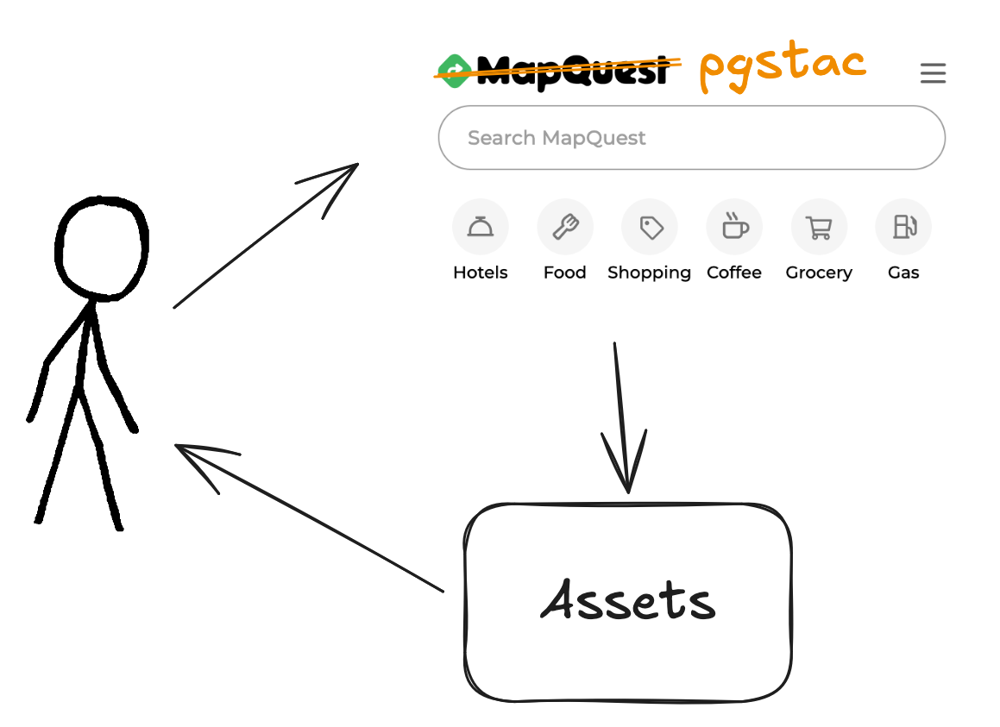
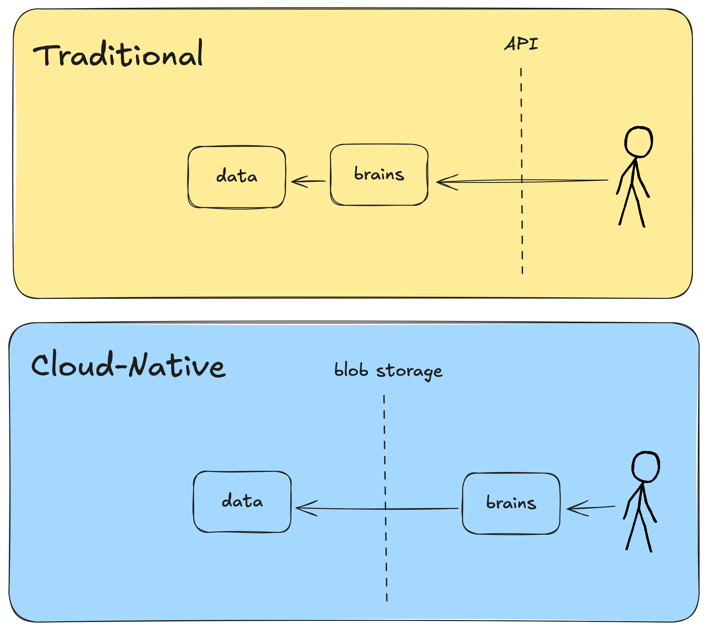
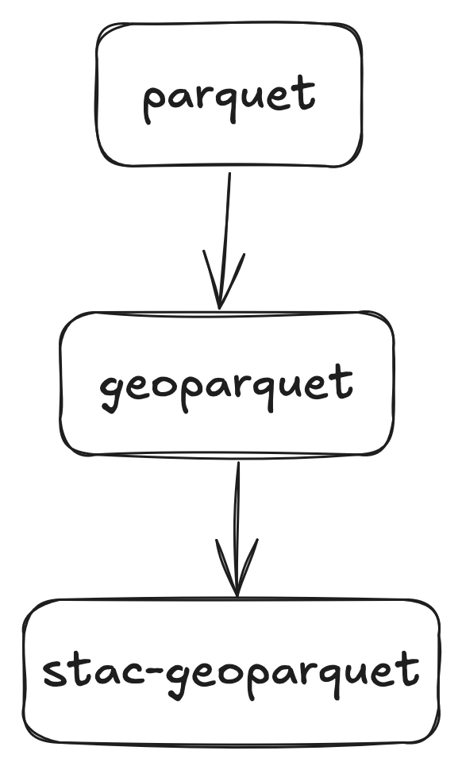
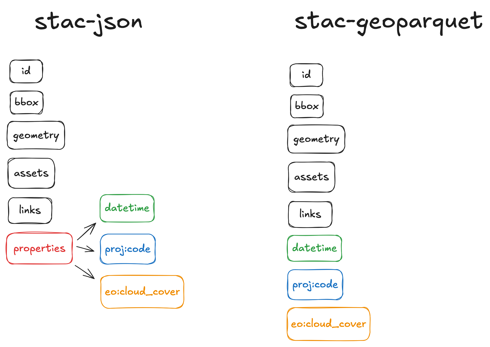
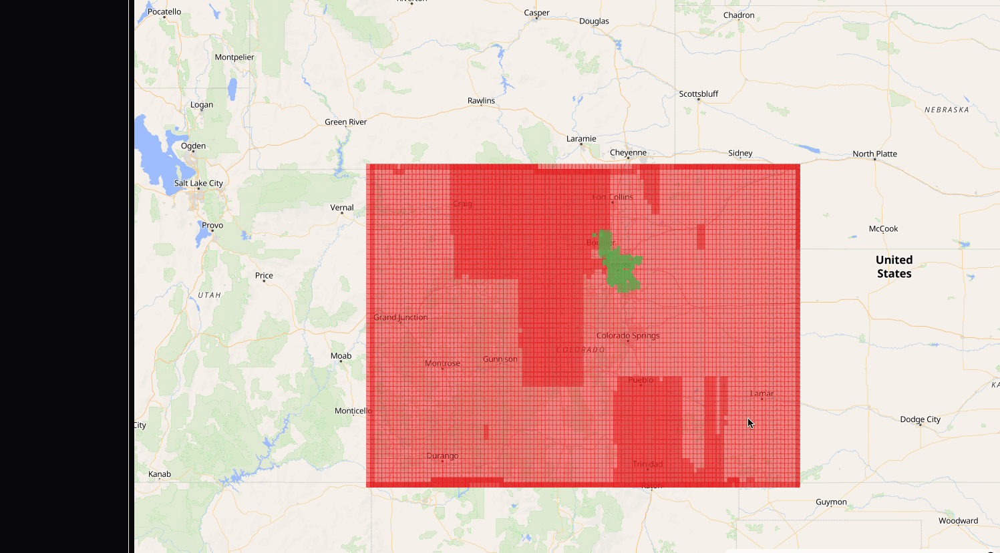

Pete Gadomski
2025-06-06
STAC is the map to your data.
— Howard Butler


USMC Archives from Quantico, USA, CC BY 2.0, via Wikimedia Commons



$ python -m pip install stac-geoparquet
import stac_geoparquet.arrow
import pyarrow.parquet
infile = "items.ndjson"
outfile = "items.parquet"
stac_geoparquet.arrow.parse_stac_ndjson_to_parquet(infile, outfile)
table = pyarrow.parquet.read_table(outfile)
items = stac_geoparquet.arrow.stac_table_to_items(table)
$ python -m pip install rustac
import rustac
infile = "items.ndjson"
outfile = "items.parquet"
items = await rustac.read(infile)
await rustac.write(outfile)
items = await rustac.read(outfile)
$ rustac translate items.ndjson items.parquet$ gpq describe items.parquet
╭────────────────────┬────────┬─────────────────────────────────────────────────────────────────────────────── ≈
│ COLUMN │ TYPE │ ANNOTATION ≈
├────────────────────┼────────┼─────────────────────────────────────────────────────────────────────────────── ≈
│ stac_version │ binary │ string ≈
│ stac_extensions │ │ list ≈
│ id │ binary │ string ≈
│ instruments │ │ list ≈
│ license │ binary │ string ≈
│ links │ │ list ≈
│ assets │ │ group ≈
│ collection │ int32 │ null ≈
│ datetime │ int64 │ timestamp(isadjustedtoutc=true, timeunit=milliseconds, is_from_converted_type= ≈
│ start_datetime │ int64 │ timestamp(isadjustedtoutc=true, timeunit=milliseconds, is_from_converted_type= ≈
│ end_datetime │ int64 │ timestamp(isadjustedtoutc=true, timeunit=milliseconds, is_from_converted_type= ≈
│ title │ binary │ string ≈
│ created │ int64 │ timestamp(isadjustedtoutc=true, timeunit=milliseconds, is_from_converted_type= ≈
│ oam:producer_name │ binary │ string ≈
│ oam:platform_type │ binary │ string ≈
│ gsd │ double │ ≈
│ providers │ │ list ≈
│ bbox │ │ group ≈
│ geometry │ binary │ ≈
│ │ │ ≈
├────────────────────┼────────┴─────────────────────────────────────────────────────────────────────────────── ≈
│ Rows │ 17669 ≈
│ Row Groups │ 1 ≈
│ GeoParquet Version │ 1.1.0 ≈
╰────────────────────┴──────────────────────────────────────────────────────────────────────────────────────── ≈
TODO

.jpg){kind=link}